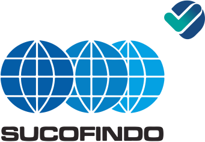

AI/ML Engineer · Natural Language Processing
I teach machines to read and write Bahasa Indonesia.
I'm Muhammad Hilmi Syarif. I fine-tune language models for Indonesian text, then build the API and the app around them so people can actually use the result.
- GPT-2 fine-tuned for Indonesian recipes
- B.Sc. Computer Science
- Models as APIs, not just notebooks
About
A soft spot for language, and for finishing the job
My main subject is Natural Language Processing. My final research fine-tuned GPT-2 to write Indonesian cooking recipes, and I have been working on text models ever since: tokenization, transfer learning, and generation for a language that most pretrained models barely know.
I also worked as a data scientist on sales forecasting, where I learned that a model is only useful once someone can call it. So I build the service, the interface and the release pipeline too.
-
Focus
Generative language models and transfer learning for low-resource Indonesian text.
-
Background
Data science work on sales forecasting, with models served as REST APIs.
-
Now learning
The Natural Language Processing Specialization, currently on probabilistic models.
Featured work
Indonesian recipe generation with GPT-2
My thesis project. Give the model a list of ingredients and it writes a complete Indonesian recipe.
- Transformer layers
- 12
- Hidden size
- 768
- Control tokens added
- 5
- Frameworks
- TF → PyTorch
-
01
Collect
Scraped Indonesian recipe sites and merged them with public datasets into one corpus.
-
02
Clean
Normalized every field, removed duplicates and broken entries, and combined the sources.
-
03
Encode
BPE encoding with control tokens that mark where a recipe, its ingredients and its steps begin.
-
04
Fine-tune
Transfer learning on GPT-2 small, first in TensorFlow, later rebuilt on PyTorch and Hugging Face Transformers.
-
05
Generate
Conditional generation from a prompt of ingredients, with perplexity as the score.
<|start-recipe|>
<|start-ingredients|>
<|start-steps|>
<|end-recipe|>
<|pad|>
Projects
More machine learning work
-
Handwritten digit generator
A conditional GAN trained on MNIST that draws any digit you pick, served as a Streamlit app.
-
News topic classification
A bidirectional LSTM that sorts Indonesian news articles into topics.
-
Trash classification
Image classification for waste sorting.
-
Car price prediction
A regression model for car prices with a small web demo.
-
Stock forecasting
Time-series forecasting experiments on stock prices.
-
Product trend forecasting
SARIMAX forecasts of product trends, driven by Google Trends data.
Apps I've built
-
Harbor
A dock, menu bar and widget panel for Windows, with signed in-app updates.
-
Warunku
Store management for a small warung: products, customers and itemized debt tracking. Flutter app with a Node.js backend.
-
Lab datasheet system Private
Role-based workflow for lab test records, review per clause, and generated PDF and Word reports.
-
Half-marathon tracker Private
A 52-week training plan with offline sync and Strava import, as a web app and an Android app.
Skills
What I work with
NLP & machine learning
Serving & data
Apps
Experience
Where I've worked and studied
-
Aug 2025 – Present

Calibration and Electrical Technician 2
PT Sucofindo
Calibrate measuring instruments and test electrical products in the laboratory, then prepare the draft test reports and the test result certificates. I also built the lab's internal datasheet system, which moves test records and reports into a single web app.
-
Sep 2023 – May 2024
Logistic Administrator (Data Entry)
PT. Fastrata Buana
Managed logistics and supply chain data for inventory tracking, and automated data entry workflows to cut processing time and errors.
-
Mar 2022 – Mar 2023
Data Scientist
PT. Kurnia Ciptamoda Gemilang
Analyzed transaction and inventory data with SQL and Python, built sales forecasting models, and deployed machine learning models as REST APIs with Flask.
-
Education
B.Sc. in Computer Science
Universitas Singaperbangsa Karawang · GPA 3.65 / 4.00
Final research: implementation of GPT-2 for Indonesian cooking recipe generation using transfer learning.
Contact
Have a language problem worth solving?
I'm open to NLP and machine learning roles and collaborations. Email is the fastest way to reach me.